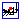

Library of 1-dim. thermo-fluid flow models using the Modelica.Media media description
Library Modelica.Fluid is a free Modelica package providing components for 1-dimensional thermo-fluid flow in networks of vessels, pipes, fluid machines, valves and fittings. A unique feature is that the component equations and the media models as well as pressure loss and heat transfer correlations are decoupled from each other. All components are implemented such that they can be used for media from the Modelica.Media library. This means especially that an incompressible or compressible medium, a single or a multiple substance medium with one or more phases might be used.
In the next figure, several features of the library are demonstrated with a simple heating system with a closed flow cycle. By just changing one configuration parameter in the system object the equations are changed between steady-state and dynamic simulation with fixed or steady-state initial conditions.
With respect to previous versions, the design of the connectors has been changed in a non-backward compatible way, using the recently developed concept of stream connectors that results in much more reliable simulations (see also Stream-Connectors-Overview-Rationale.pdf). This extension was included in Modelica 3.1. As of Jan. 2009, the stream concept is supported in Dymola 7.1. It is recommended to use Dymola 7.2 (available since Feb. 2009), or a later Dymola version, since this version supports a new annotation to connect very conveniently to vectors of connectors. Other tool vendors will support the stream concept as well.
The following parts are useful, when newly starting with this library:
Licensed by the Modelica Association under the Modelica License 2
Copyright © 2002-2015, ABB, DLR, Dassault Systèmes AB, Modelon, TU Braunschweig, TU Hamburg-Harburg, Politecnico di Milano.
This Modelica package is free software and the use is completely at your own risk; it can be redistributed and/or modified under the terms of the Modelica License 2. For license conditions (including the disclaimer of warranty) see Modelica.UsersGuide.ModelicaLicense2 or visit https://www.modelica.org/licenses/ModelicaLicense2.
Extends from Modelica.Icons.Package (Icon for standard packages).
| Name | Description |
|---|---|
| User's Guide | |
| Demonstration of the usage of the library | |
|  System | System properties and default values (ambient, flow direction, initialization) |
| Devices for storing fluid | |
| Devices for conveying fluid | |
| Devices for converting between energy held in a fluid and mechanical energy | |
| Components for the regulation and control of fluid flow | |
| Adaptors for connections of fluid components and the regulation of fluid flow | |
| Define fixed or prescribed boundary conditions | |
| Sensors | Ideal sensor components to extract signals from a fluid connector |
| Interfaces for steady state and unsteady, mixed-phase, multi-substance, incompressible and compressible flow | |
| Types | Common types for fluid models |
| Functions for convective heat transfer and pressure loss characteristics | |
| Utility models to construct fluid components (should not be used directly) | |
| Icons |
System properties and default values (ambient, flow direction, initialization)
A system component is needed in each fluid model to provide system-wide settings, such as ambient conditions and overall modeling assumptions. The system settings are propagated to the fluid models using the inner/outer mechanism.
A model should never directly use system parameters. Instead a local parameter should be declared, which uses the global setting as default. The only exceptions are:
m_flow_small = system.eps_m_flow*m_flow_nominal
The global system.m_flow_small and system.dp_small are classic parameters. They do not distinguish between laminar flow and regularization of zero flow. Absolute small values are error prone for models with local nominal values. Moreover dp_small can generally be obtained automatically. Consider using the new system.use_eps_Re = true (see Advanced tab).
| Name | Description |
|---|---|
| Environment | |
| p_ambient | Default ambient pressure [Pa] |
| T_ambient | Default ambient temperature [K] |
| g | Constant gravity acceleration [m/s2] |
| Assumptions | |
| allowFlowReversal | = false to restrict to design flow direction (port_a -> port_b) |
| Dynamics | |
| energyDynamics | Default formulation of energy balances |
| massDynamics | Default formulation of mass balances |
| momentumDynamics | Default formulation of momentum balances, if options available |
| Initialization | |
| m_flow_start | Default start value for mass flow rates [kg/s] |
| p_start | Default start value for pressures [Pa] |
| T_start | Default start value for temperatures [K] |
| Advanced | |
| use_eps_Re | = true to determine turbulent region automatically using Reynolds number |
| m_flow_nominal | Default nominal mass flow rate [kg/s] |
| eps_m_flow | Regularization of zero flow for |m_flow| < eps_m_flow*m_flow_nominal |
| Classic | |
| dp_small | Default small pressure drop for regularization of laminar and zero flow [Pa] |
| m_flow_small | Default small mass flow rate for regularization of laminar and zero flow [kg/s] |